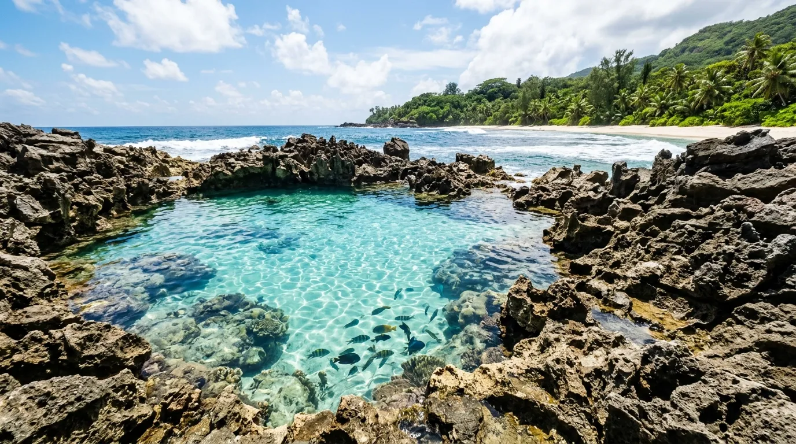

- Sekilas Tentang Pantai Batu Bengkung
- Keunikan Kolam Renang Alami
- Batu Bengkung Sunset, Primadona Wisatawan
- Spot Foto Instagramable
- Aktivitas Seru di Pantai Batu Bengkung
- Harga Tiket Masuk dan Jam Operasional
- Rute Menuju Pantai Batu Bengkung
- Tips Berkunjung ke Pantai Batu Bengkung
- Kesimpulan
- FAQ Seputar Pantai Batu Bengkung
Bagi para pemburu senja, ada satu nama pantai di Malang Selatan yang wajib masuk daftar kunjungan: Pantai Batu Bengkung. Belum seramai Goa Cina atau Ngliyep, pantai ini justru menawarkan sesuatu yang semakin langka, yaitu ketenangan, alam yang masih asri, dan momen Batu Bengkung sunset yang digadang-gadang sebagai salah satu yang terbaik di sepanjang Jalur Lintas Selatan Malang.
Ditambah lagi dengan berbagai spot foto yang bikin Batu Bengkung layak disebut sebagai salah satu pantai instagramable di Malang. Simak ulasan lengkapnya berikut ini.
Pantai Batu Bengkung menawarkan ketenangan, kolam renang alami berwarna hijau tosca, dan momen sunset yang digadang-gadang sebagai salah satu yang terbaik di sepanjang Jalur Lintas Selatan Malang.
Sekilas Tentang Pantai Batu Bengkung
Pantai Batu Bengkung berlokasi di Jalur Lintas Selatan, RT.42/RW.05, Dusun Hutan, Desa Gajahrejo, Kecamatan Gedangan, Kabupaten Malang, Jawa Timur. Jaraknya sekitar 64 km dari pusat Kota Malang, dengan waktu tempuh kurang lebih 2 jam perjalanan darat. Lokasinya tidak jauh dari beberapa pantai populer lain seperti Pantai Goa Cina, Pantai Bajulmati, dan Pantai Sendangbiru, sehingga sering dijadikan destinasi tambahan dalam satu rangkaian perjalanan wisata pantai selatan.
Sejak dibukanya Jalur Lintas Selatan, akses menuju pantai ini menjadi jauh lebih mudah dibandingkan sebelumnya. Meski begitu, Batu Bengkung masih tergolong "perawan" karena belum terlalu banyak dikunjungi wisatawan, menjadikan kondisi alamnya tetap asri dan minim sampah dibanding pantai-pantai yang sudah lebih populer.
Keunikan Kolam Renang Alami
Salah satu daya tarik paling khas dari Pantai Batu Bengkung adalah keberadaan kolam renang alami di tepi pantainya. Kolam ini terbentuk dari sebuah cekungan alami sedalam sekitar 1,5 meter yang terpisah dari laut lepas, dibatasi oleh batuan karang yang kokoh di sekelilingnya.
Air kolam berasal dari ombak yang terbawa masuk ke dalam cekungan tersebut, menciptakan warna hijau tosca yang jernih dan memikat. Saking jernihnya, pengunjung bisa melihat langsung batuan di dasar kolam, bahkan berenang berdampingan dengan ikan-ikan kecil yang hidup di dalamnya. Bagi yang ingin mencoba sensasi berenang di kolam alami ini, disarankan datang saat air laut sedang pasang agar kolam terisi penuh dan lebih nyaman digunakan.

Batu Bengkung Sunset, Primadona Wisatawan
Momen yang paling dinanti-nanti oleh setiap pengunjung yang datang ke Batu Bengkung adalah sunset-nya. Matahari terbenam di pantai ini dikenal begitu memukau sekaligus romantis, dengan gradasi warna langit yang berpadu apik dengan siluet tebing karang dan riak air laut.
Tidak sedikit wisatawan yang rela berlama-lama, bahkan berkemah semalaman, hanya demi menyaksikan dan mengabadikan momen matahari terbenam di pantai ini. Kombinasi antara suasana yang masih tenang, minim polusi cahaya, dan pemandangan cakrawala yang terbuka lebar membuat Batu Bengkung layak disebut sebagai salah satu spot sunset terbaik di Malang Selatan.
Spot Foto Instagramable
Sebagai salah satu pantai instagramable di Malang, Batu Bengkung menawarkan banyak sudut foto menarik yang sayang untuk dilewatkan, di antaranya:
- Kolam renang alami dengan warna air hijau tosca yang kontras dengan batu karang di sekelilingnya
- Tebing karang tinggi yang mengelilingi kawasan pantai, memberikan latar dramatis untuk foto
- Momen sunset dengan siluet tebing dan pepohonan sebagai foreground
- Hamparan pasir dan bebatuan pantai yang unik, cocok untuk foto candid maupun lanskap
Kombinasi elemen-elemen ini membuat setiap sudut Batu Bengkung terasa seperti latar foto yang sudah "jadi" tanpa perlu banyak pengaturan tambahan.
Aktivitas Seru di Pantai Batu Bengkung
Selain berenang di kolam alami dan berburu foto, ada beberapa aktivitas lain yang bisa dilakukan wisatawan saat berkunjung ke Batu Bengkung, di antaranya:
- Mendaki bukit karang di sekitar kawasan pantai untuk menikmati pemandangan dari ketinggian
- Camping di tepi pantai, terutama bagi yang ingin menyaksikan sunset sekaligus sunrise keesokan harinya
- Menikmati kuliner di warung-warung sederhana milik warga sekitar
- Bersantai di tepi pantai sambil menikmati suara deburan ombak yang menenangkan
Perlu diperhatikan, ombak di pantai ini tergolong cukup besar khas pantai selatan Jawa, sehingga wisatawan disarankan untuk tetap berhati-hati dan tidak berenang terlalu jauh ke tengah laut lepas.
Harga Tiket Masuk dan Jam Operasional
Berikut rincian biaya terbaru yang perlu kamu siapkan:
Pantai ini buka selama 24 jam setiap hari tanpa jadwal tutup tertentu, sehingga bisa dikunjungi kapan saja, baik untuk wisata singkat maupun untuk berburu sunset hingga bermalam. Pengunjung bahkan diperbolehkan menginapkan kendaraan di area parkir pantai bagi yang ingin berkemah semalaman.
Catatan: Harga tiket berpotensi berubah saat momen libur nasional atau musim liburan panjang, sehingga ada baiknya mengecek info terbaru sebelum berangkat. Disarankan pula membawa uang tunai secukupnya karena fasilitas pembayaran digital di lokasi masih terbatas.
Rute Menuju Pantai Batu Bengkung
Ada dua rute utama yang bisa dipilih untuk menuju Pantai Batu Bengkung dari pusat Kota Malang:
- Rute via Turen – Sumbermanjing Wetan – Sendangbiru, yang akan melewati beberapa pantai populer lain seperti Pantai Sendangbiru, Pantai Goa Cina, dan Pantai Bajulmati. Rute ini menyuguhkan pemandangan yang indah sepanjang perjalanan, meski jalannya cukup berkelok dan menantang.
- Rute via Kepanjen – Bantur – Gondanglegi, sebagai alternatif lain, meski di beberapa titik kondisi jalannya berlubang sehingga perlu kewaspadaan ekstra saat berkendara.
Kedua rute tersebut bisa dipilih sesuai preferensi, baik yang ingin sekaligus mampir ke pantai-pantai lain di sepanjang jalan, maupun yang ingin langsung menuju lokasi.
Tips Berkunjung ke Pantai Batu Bengkung
- Datang menjelang sore hari untuk mendapatkan momen sunset terbaik.
- Berhati-hati saat berenang di laut lepas karena ombaknya cukup besar; manfaatkan kolam alami untuk berenang lebih aman.
- Bawa uang tunai secukupnya karena fasilitas pembayaran digital di lokasi masih terbatas.
- Siapkan perlengkapan camping jika ingin bermalam menikmati sunset sekaligus sunrise.
- Jaga kebersihan pantai, mengingat kawasan ini masih tergolong asri dan minim sampah.
- Gunakan alas kaki yang nyaman saat mendaki bukit karang di sekitar pantai.
Kesimpulan
Pantai Batu Bengkung membuktikan bahwa keindahan tak selalu harus ramai untuk dinikmati. Dengan kolam renang alami yang unik, tebing karang yang eksotis, serta momen Batu Bengkung sunset yang begitu memesona, pantai ini layak menjadi salah satu destinasi utama saat berkunjung ke Malang Selatan. Ditambah dengan harga tiket yang terjangkau dan suasana yang masih tenang, Batu Bengkung menjadi bukti nyata bahwa pantai ini pantas disebut sebagai salah satu pantai instagramable sekaligus spot sunset terbaik yang dimiliki Malang.
Catatan: Harga tiket, biaya parkir, dan kebijakan pengelolaan Pantai Batu Bengkung dapat berubah sewaktu-waktu. Disarankan untuk mengecek informasi terbaru sebelum berangkat.